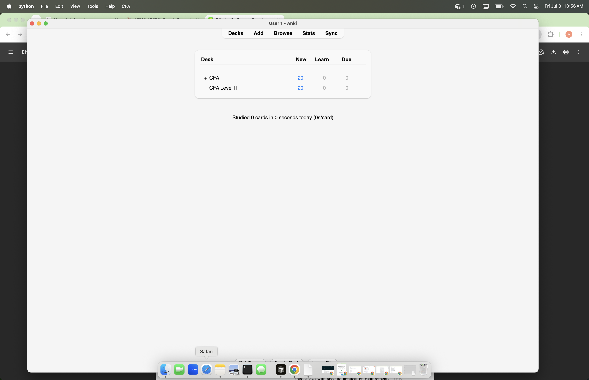
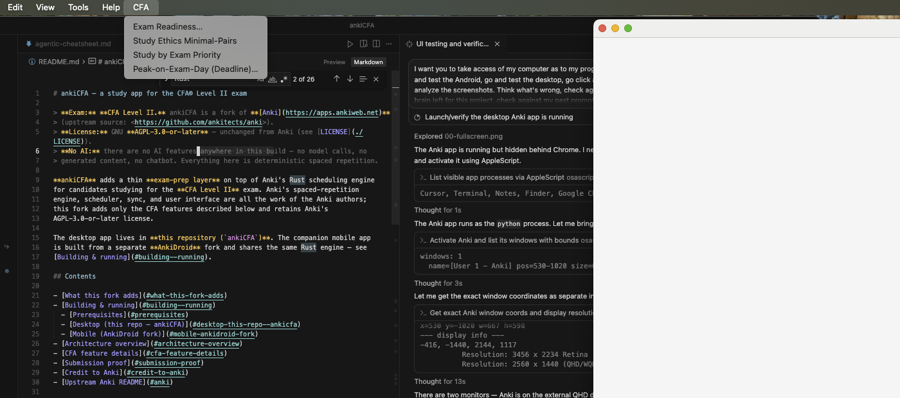
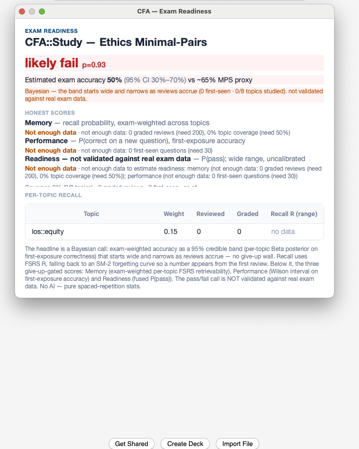
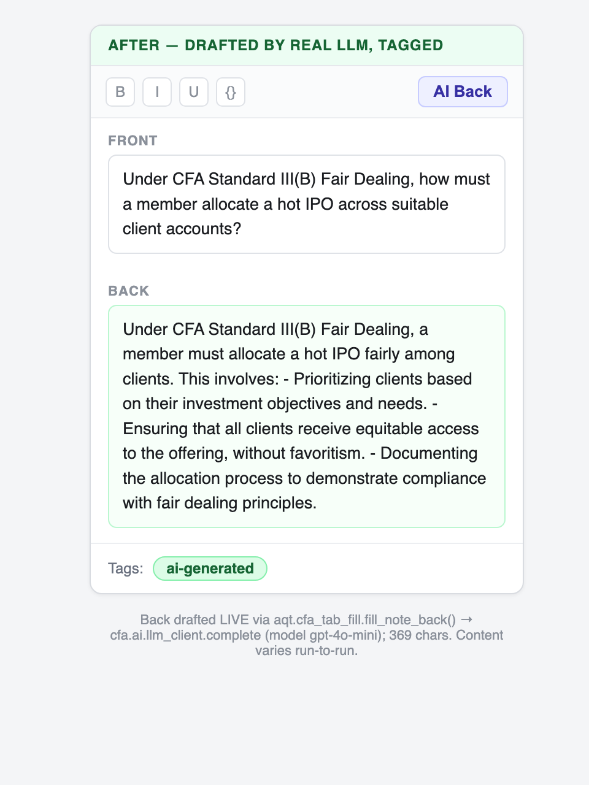
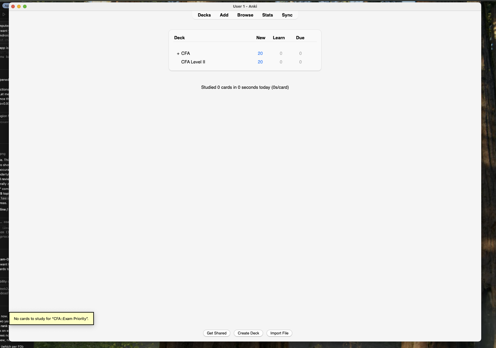
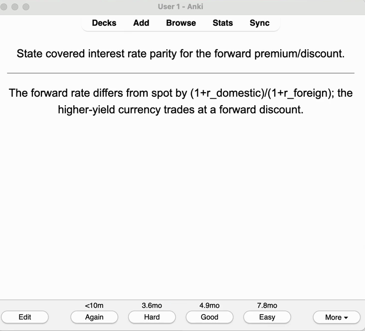
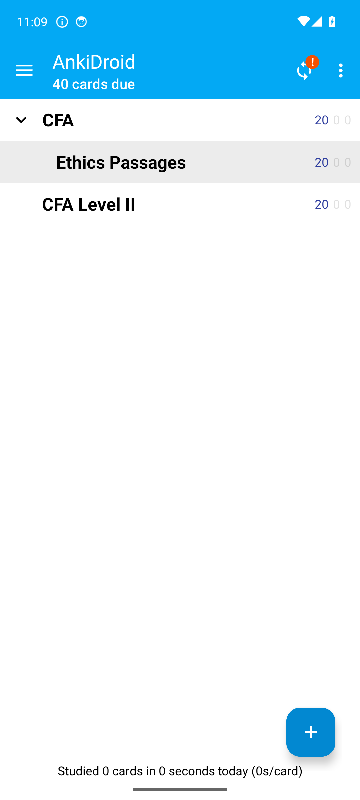
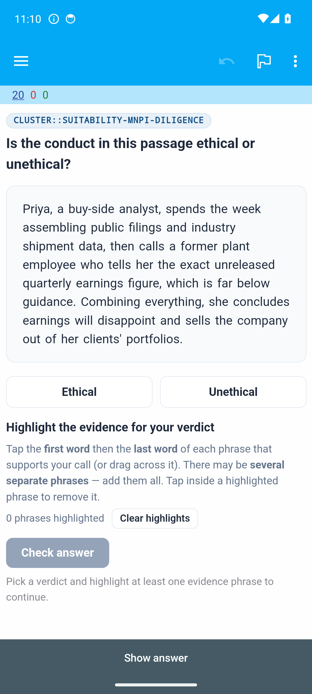
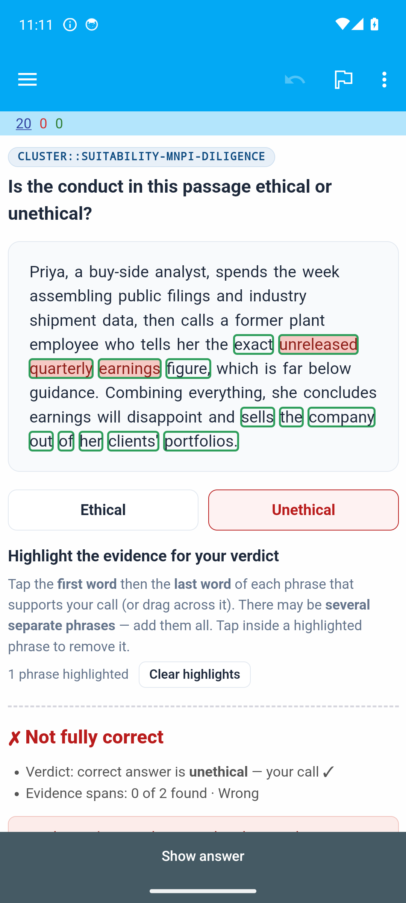
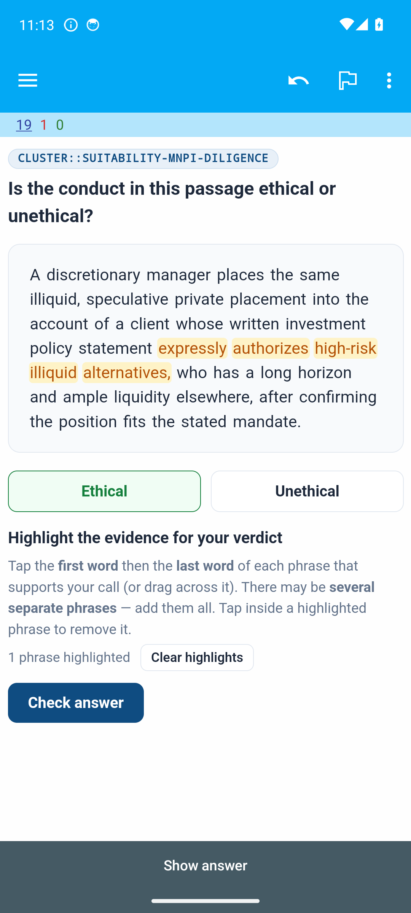

LIVE APP CAPTURE — real macOS Anki + AnkiDroid (not HTML / offscreen renders)
Every panel is a genuine screenshot of the running app or a frame of the real 45s desktop-review recording. Desktop shows macOS window chrome + menu bar; mobile shows the Android status/gesture bar.
CFA Exam-Prep Pro Upgrade · Submission Proof (P4 · item 5)
Live App Contact Sheet — every shipped surface, real captures
Ten genuine captures spanning the desktop (macOS Anki) and mobile (AnkiDroid on a physical Android phone) experiences, plus one frame lifted from the committed 45-second review video. No mockups; no rendered HTML stand-ins.
Headline tests are reproducible from real commands:
Python/Qt 203 passed · 1 skipped via just cfa-f9-test-tally (one deduplicated collection) ·
Rust 21 = cargo test -p anki --lib -- scheduler::cfa_deadline (10) + … scheduler::service::tests::exam_queue scheduler::service::tests::verification_probe (11).
Desktop · live macOS Anki
real app window (traffic-light chrome + native menu bar visible)
F0b / F5 · DECK BROWSER
CFA → CFA Level II decks, 20 new — clean isolated app window

F0b · STUDY MENU
CFA menu open: Exam Readiness · Study Ethics Minimal-Pairs · Study by Exam Priority · Peak-on-Exam-Day

F4 · EXAM READINESS
Bayesian 95% credible band + likely-fail call + honest "not enough data" give-up rules + per-topic recall

F3 · AI TAB-TO-FILL
Card back drafted by the REAL LLM (with-key, item 4), note tagged ai-generated

F0b · EXAM-PRIORITY QUEUE
"Study by Exam Priority" action invoked live (queue empty here — 0 due in the fresh seed)

▶ REAL VIDEO FRAME
Frame from demo/desktop-review.mp4 — a CFA card reviewed with the SM-2 answer buttons

Mobile · AnkiDroid on a physical Android device
fork Rust engine + synced content (status bar / gesture bar visible)
F6 / F7 · ANKIDROID
Bundled CFA + Ethics Passages decks on device (40 due)

F1 / F7 · ETHICS PASSAGE
One-passage multi-span card on device — Suitability/MNPI/Diligence cluster

F2 / F7 · GRADED
Graded on device: verdict correct, evidence-span scoring (0/2 spans) — multi-span highlight

F1 / F7 · ETHICAL CASE
Second passage, "Ethical" verdict with highlighted evidence spans
